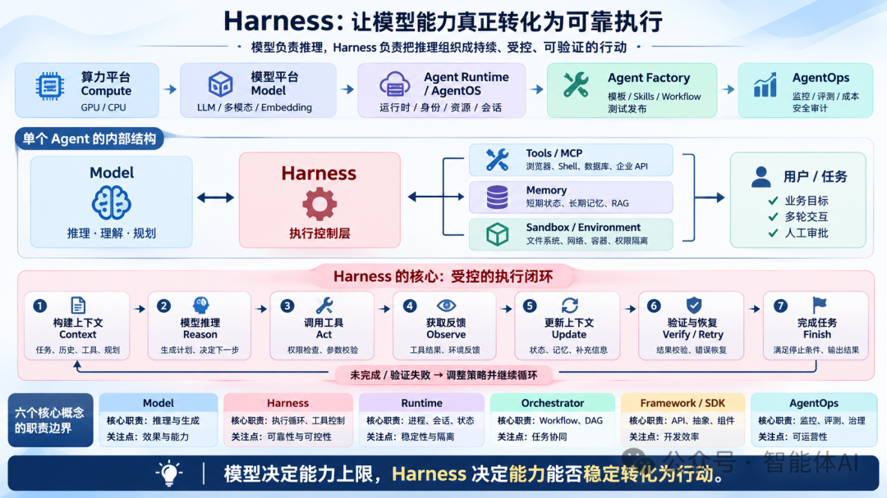
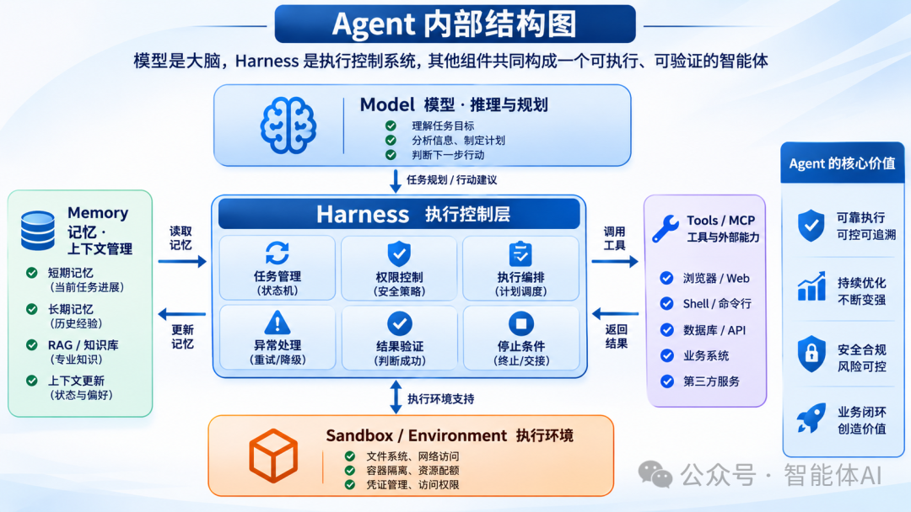
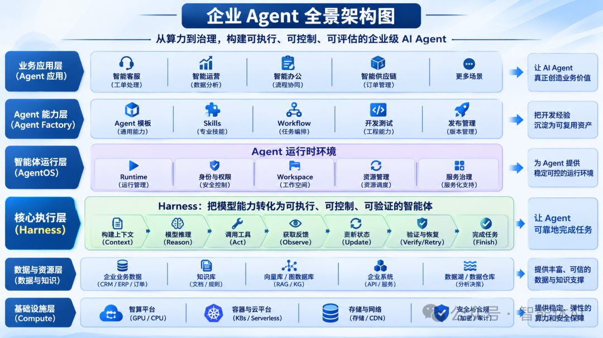
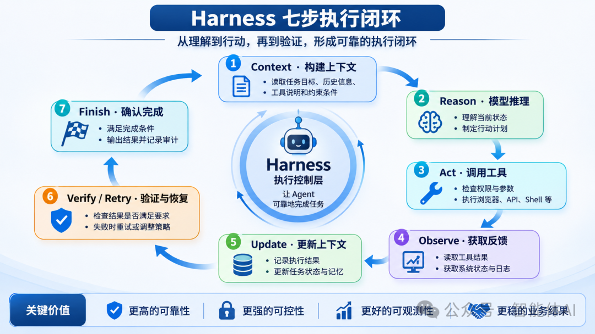

AI Agent 技术架构全解析：Harness Engineering 如何通过 Agent Runtime 和 Execution Loop，让 AI 真正
来源：微信公众号 归档日期：2026-11-21 抓取状态：成功 原文字符：10375｜配图：4 张
摘要速览
- 群同步待补摘要 · 微信公众号
核心内容
（待补充）
可执行启发
（待补充）
我的想法
（待补充）
原文沉淀
目录
- Model 负责思考，Harness 负责让事情真正发生
- 为什么一个模型换了 Harness，表现就可能完全不同？
- 企业级 Agent，需要一整套技术架构
- Compute Platform：提供算力基础
- Model Platform：提供模型能力
- AgentOS / Runtime：管理 Agent 的运行
- Agent Factory：把开发经验变成可复用资产
- AgentOps：解决上线之后的问题
- 拆开 Harness：一个 Agent 内部到底需要什么？
- 模型推理：不仅要生成答案，还要判断下一步
- 工具调用：让模型具备真实的行动能力
- Memory：避免 Agent 每一步都从头开始
- Environment：让 Agent 在有边界的环境中执行
- Execution Control：管理整个任务的生命周期
- Harness 的核心不是调用工具，而是构建执行闭环
- 用一个企业客服案例，看 Harness 如何真正发挥作用
- 企业构建 Harness，最应该关注哪五件事？
- 真正的竞争，正在从模型能力延伸到工程能力
模型越来越聪明，并不意味着Agent就越来越可靠。从模型能力走向可靠执行，中间需要补上的，是一套围绕模型的执行控制体系——Harness。
这两年，AI 模型的能力进步得非常快。
从最初的文本问答，到复杂推理、代码生成，再到调用工具、操作浏览器、编写程序、处理文件，大模型正在逐步具备完成复杂任务的能力。
但如果你真正把 AI 放进企业的业务流程里，就会发现一个很有意思的现象：
模型越来越聪明，并不意味着 Agent 就越来越可靠。
让 AI 写一段代码，它可能表现得非常出色；让它独立完成一个需要查询数据库、调用多个 API、修改业务数据、检查执行结果的任务，情况就不一样了。
工具调用可能失败，上下文可能丢失，执行过程可能偏离目标，甚至前面明明已经做过的事情，后面还会重复做一遍。
更麻烦的是，有些任务看起来已经完成了，但实际上业务系统里的数据根本没有发生变化。
这也是为什么，最近我越来越关注一个概念：Harness。

如果说大模型解决的是 AI 能不能理解问题、推理问题，那么 Harness 解决的就是另一个更现实的问题：
「如何把模型的能力，变成一个能够持续执行、受到控制、可以验证结果的智能体？」
这件事，可能比单纯追求更强的模型更加重要。
📌 本文看点
01
Model 与 Harness 的分工
02
七步执行闭环拆解
03
企业落地五个关键
01
MODEL VS HARNESS
Model 负责思考，Harness 负责让事情真正发生
先看一个简单的例子。
假设我们让一个 AI Agent 处理客户投诉。
任务并不复杂：读取客户提交的工单，查询订单信息，分析投诉原因，根据企业规则提出解决方案，必要时发起审批，最后更新工单并通知客户。
如果只是让大模型分析投诉、生成一份处理建议，今天的主流模型已经能够做得不错。
但如果要求它真正完成整个任务，就会遇到一连串问题。
客户的订单信息在哪里查询？调用接口失败怎么办？查到的订单状态与工单中的描述不一致怎么办？赔偿金额超过授权范围怎么办？工单更新成功之后，如何确认系统里的状态确实发生了变化？
这些问题，并不是单纯提高模型的推理能力就能全部解决的。
因为它们涉及的不只是思考，还涉及执行环境、工具调用、状态管理、权限控制、异常恢复和结果验证。

这就引出了一个非常重要的区别。
「Model 是模型，Harness 是围绕模型构建的执行控制体系。」
模型负责理解任务、分析信息、制定计划，并根据反馈决定下一步做什么。
Harness 则负责管理整个执行过程，包括向模型提供上下文、调度工具、维护任务状态、处理执行异常、验证结果，以及判断什么时候应该继续、停止或者交给人工。
我习惯用一个公式来理解 Agent 的基本构成：
Agent = Model + Harness + Tools + Memory + Environment
这里的公式并不是行业统一的标准定义，而是一种更方便理解工程架构的方式。
Model 是大脑，Tools 是手脚，Memory 提供记忆与上下文，Environment 提供实际工作的环境，而 Harness 负责把这些能力组织起来，让整个系统按照目标持续运行。
只有大脑，没有执行系统，AI 只能停留在分析和建议层面。
只有工具，没有合理的控制机制，AI 又可能在复杂任务中反复试错。
真正有价值的 Agent，需要把两者结合起来。
02
THOUGHT EXPERIMENT
为什么一个模型换了 Harness，表现就可能完全不同？
我们可以做一个思想实验。
同样使用一个能力很强的大模型，让它完成一项包含十几个步骤的编程任务。
第一套系统只提供模型接口、一个简单的 Prompt 和几个工具。
模型生成计划，调用工具，拿到返回结果，再生成下一步操作。任务是否完成，主要依赖模型自己的判断。
第二套系统则为模型配备了完整的执行控制机制。
系统会记录当前任务状态，保存关键上下文，对工具调用进行参数校验，为不同操作设置权限，捕获执行错误，并在关键步骤之后运行测试。
如果任务没有完成，系统会分析失败原因，决定是重试、调整计划，还是停止执行并请求人工介入。
这两套系统使用的是同一个模型，但最终表现很可能有明显差异。
第一套系统可能在简单任务中表现不错，一旦遇到异常，就容易失去方向。
第二套系统则有机会在更长的任务链条中保持稳定，即使某个步骤失败，也不至于让整个任务失控。
当然，Harness 也不是万能的。如果模型理解错了需求，工具本身存在缺陷，或者企业数据不准确，再完善的执行框架也无法保证结果正确。
但 Harness 能够把很多原本难以控制的问题，转化为可以检测、处理和验证的工程问题。这正是它的价值所在。
过去，我们经常讨论模型的参数规模、推理能力、上下文长度和基准测试成绩。这些指标当然重要。
但当 AI 开始真正执行任务之后，另一个问题变得越来越关键：
「模型犯错之后，系统能不能发现？发现之后，能不能恢复？恢复之后，能不能确认结果？」
这才是从模型能力走向 Agent 工程能力的关键一步。
03
TECH ARCHITECTURE
企业级 Agent，需要一整套技术架构
如果把视角从单个 Agent 扩展到整个企业，就会发现，Harness 只是完整技术体系中的一个重要部分。
企业要让 Agent 大规模运行，还需要考虑算力、模型服务、运行环境、开发测试和生产治理。
我倾向于把企业 Agent 的技术体系理解为五个相互衔接的部分。

Compute Platform：提供算力基础
最底层是计算基础设施，包括 GPU、CPU、存储和网络。
这一层解决的是模型推理、数据处理和 Agent 执行所需要的计算资源问题。
对于大规模企业应用来说，算力成本、资源隔离、并发能力和服务稳定性都会直接影响整体系统的运行。
但算力充足，并不代表 Agent 就能够可靠地完成任务。它只是整个体系的基础。
Model Platform：提供模型能力
模型平台负责管理大语言模型、多模态模型、Embedding、模型路由和推理服务。
企业可能同时使用多个模型：有的擅长复杂推理，有的适合快速分类，有的更适合代码生成，还有的成本更低。
模型平台需要根据任务特点，在能力、延迟、成本和稳定性之间进行选择。
这里有一个容易被忽略的问题：模型选择和任务执行控制，是两个不同的问题。
选对模型，可以提高任务成功的可能性；但要让任务稳定完成，还需要执行层面的工程保障。
AgentOS / Runtime：管理 Agent 的运行
当企业开始运行大量 Agent 时，就不能再把每一个 Agent 都看作一个简单的 API 调用。
Agent 需要运行环境、身份、资源、Workspace、会话状态和生命周期管理。
例如，一个代码 Agent 可能需要访问指定代码仓库、运行测试、读写工作目录；一个客服 Agent 则可能需要查询 CRM、订单系统和知识库。
不同 Agent 的身份、资源和权限应该受到明确控制。
Runtime 解决的是 Agent 在哪里运行、如何运行，以及如何管理运行过程的问题。
需要注意，AgentOS 并不是所有技术体系中都存在的独立产品层。这里更重要的是它代表的职责：为 Agent 提供受控的运行环境。
Agent Factory：把开发经验变成可复用资产
如果每构建一个 Agent，都要从头编写 Prompt、开发工具、设计流程、测试异常情况，那么企业很难实现规模化。
Agent Factory 关注的是如何把单个 Agent 的开发过程，沉淀成可以复用的工程体系。例如：
1
将常见业务任务封装成模板。
2
将稳定的操作能力沉淀为 Skills。
3
将多步骤任务组织为 Workflow。
4
为工具调用、权限检查和结果验证建立统一组件。
5
建立测试、发布、版本管理和回归验证机制。
这里真正重要的，不是工厂里有多少个 Agent，而是有多少能力可以被重复使用，有多少错误能够在发布之前被发现。
AgentOps：解决上线之后的问题
Agent 开发完成，并不意味着工作结束。
真正进入生产环境后，系统还需要持续监控任务完成率、工具调用失败率、人工接管率、运行成本和安全事件。
如果某次模型升级导致任务成功率下降，系统需要能够发现问题。如果某个工具频繁超时，需要能够定位原因。如果某个 Agent 出现异常操作，需要能够追踪执行过程，并在必要时暂停服务。
这就是 AgentOps 的意义。它让 Agent 从一个可以演示的技术原型，逐渐变成能够被企业持续运营的生产系统。
把这五部分放在一起，就能看出企业 Agent 的整体逻辑：
算力提供基础，模型提供智能，Runtime 提供运行环境，Harness 控制执行过程，Agent Factory 负责规模化生产，AgentOps 负责持续治理。
它们之间存在交叉和协作，但不能简单地用一个模型接口替代整套工程体系。
04
INSIDE HARNESS
拆开 Harness：一个 Agent 内部到底需要什么？
回到单个 Agent。
如果要设计一个真正能够执行复杂任务的系统，我认为至少需要认真处理五个方面。
模型推理：不仅要生成答案，还要判断下一步
模型需要理解用户目标，分析当前信息，制定计划，并根据任务进展不断调整行动。
但模型给出的计划，不应该被直接当作已经发生的事实。
例如，模型认为自己已经完成了订单更新，这只是一种判断。订单系统是否真的更新成功，需要通过实际的工具返回结果或者重新查询业务状态来确认。
这两者之间的区别非常重要。
工具调用：让模型具备真实的行动能力
企业 Agent 的工具可能包括浏览器、Shell、数据库查询、内部 API、文件系统以及各种业务系统。
MCP可以帮助 Agent 与外部工具和数据源建立标准化连接，但工具接入协议本身，并不能自动解决执行可靠性问题。
工具调用仍然需要考虑参数校验、超时处理、权限检查、调用结果解析和错误恢复。
尤其是在企业场景中，读取数据与修改数据，风险完全不同。
查询一个订单，与修改订单状态、取消合同、发起退款，不应该采用完全相同的执行策略。
Memory：避免 Agent 每一步都从头开始
复杂任务往往跨越多个执行步骤。
如果系统没有妥善管理上下文，Agent 就可能忘记已经完成的工作，重复调用工具，或者在后续步骤中使用过时的信息。
因此，系统需要区分当前任务状态、短期上下文、长期记忆和外部知识。
不过，记忆也不是越多越好。
真正重要的是在正确的时间保留正确的信息，并且能够判断信息是否仍然有效。
例如，某个订单五分钟前的状态，不一定等于当前状态。对于会持续变化的业务数据，必要时应该重新查询，而不是盲目相信历史记忆。
Environment：让 Agent 在有边界的环境中执行
Agent 需要访问文件、网络、代码仓库或者业务系统，但并不意味着它应该拥有无限制的访问权限。
工程上需要考虑沙箱、凭证管理、网络访问控制、文件权限和资源隔离。
在执行高风险操作时，还需要结合审批机制和人工确认。
这不是为了限制 Agent 的能力，而是为了让它在可接受的风险范围内工作。
Execution Control：管理整个任务的生命周期
这才是 Harness 最核心的工作。
它需要知道任务进行到哪一步，下一步应该做什么，当前操作是否成功，失败之后应该如何处理，以及什么时候才算真正完成。
如果说前面几个组件提供了能力，那么执行控制层负责把这些能力组织成一个有始有终的过程。
「一个 Agent 能够调用十种工具，不代表它能可靠地完成十步任务。」
工具数量衡量的是能力范围，执行控制决定的是这些能力能否被组织起来。
05
EXECUTION LOOP
Harness 的核心不是调用工具，而是构建执行闭环
我认为，理解 Harness 最好的方式，不是看它有多少个模块，而是看它如何完成一次任务。
一个比较实用的执行模型，可以拆成七个环节。

第一步：Context，构建上下文
系统首先需要明确任务目标、相关资料、历史状态、可用工具和约束条件。
这一步看起来简单，实际上很容易出问题。
如果任务目标不明确，或者关键业务信息缺失，模型后续推理得再好，也可能走错方向。
因此，Harness 需要在任务开始时整理上下文，并在执行过程中持续补充必要信息。
第二步：Reason，进行推理和规划
模型根据当前上下文，决定下一步行动。可能是查询数据，也可能是调用工具、拆分任务，或者向用户询问缺失信息。
这里不一定需要一次性生成完整计划。
对于复杂任务，边执行、边观察、边调整，往往比提前生成一份很长的计划更稳妥。
第三步：Act，执行具体动作
模型提出行动之后，Harness 需要检查该动作是否允许执行。
例如，参数是否完整，工具是否可用，当前身份是否具有相应权限，以及操作是否需要人工审批。通过检查之后，系统才调用相应工具。
尤其要注意，涉及付款、退款、删除数据、修改合同等操作时，不能只依赖模型自己判断是否安全。
第四步：Observe，观察执行结果
工具调用之后，系统需要读取真实结果。调用成功了吗？返回的数据是否完整？业务状态是否发生变化？是否出现超时、异常或者权限错误？
这一环节经常被低估。
很多 Agent 看起来能够调用工具，但对工具返回结果的处理并不充分。它们拿到一个返回值，就直接进入下一步，没有确认这个结果是否满足预期。
第五步：Update，更新上下文和任务状态
每完成一个重要步骤，系统都应该及时记录必要信息。例如，哪些数据已经查询，哪些操作已经执行，当前任务处于什么状态，还有哪些步骤没有完成。
这样，Agent 才能在后续推理中基于最新状态继续工作。
对于较长的任务，还需要考虑状态持久化。即使进程中断或者服务重启，也应该尽可能恢复任务，而不是从头开始。
第六步：Verify / Retry，验证结果并处理失败
这是我认为整个闭环中最值得投入工程资源的环节之一。
系统不能只问模型：“你觉得自己完成了吗？”而应该通过更可靠的方式验证结果。
代码任务可以运行测试，数据处理任务可以检查数据，业务操作可以重新查询系统状态，流程任务可以检查相关节点是否真正完成。
如果验证失败，系统需要根据错误类型决定下一步。有些错误可以重试，有些需要修改参数，有些需要重新规划，还有些必须立即停止并交给人工处理。
💡 对于可能产生重复副作用的操作，不能简单地无限重试。系统应结合幂等机制、操作记录和业务状态检查，避免重复退款、重复创建订单等问题。
第七步：Finish，确认任务真正完成
只有当任务满足预先定义的完成条件，系统才应该结束执行。
如果目标没有实现，就应该继续循环，或者明确告知用户当前阻塞在哪里。
如果部分步骤已经完成，但还有部分步骤失败，也不能把整个任务描述成完全成功。
这看起来像是一个很小的设计细节，实际上决定了 Agent 能否在企业环境中被信任。
整个过程可以概括为：
构建上下文 → 模型推理 → 调用工具 → 获取反馈 → 更新状态 → 验证与恢复 → 确认完成
这就是一个受控的行为闭环。
当然，真实系统并不一定严格按照七个独立步骤实现。有些步骤可能合并，有些步骤会重复执行。但无论架构如何变化，反馈、状态管理、验证和停止条件都不应该被忽略。
06
CONCEPTS COMPARED
Harness、Runtime、Orchestrator、Framework，到底有什么区别？
在讨论 Agent 架构时，还有几个概念经常被混在一起。它们之间确实存在交集，但解决的问题并不完全相同。
Model
解决的是怎么理解和推理。它负责生成、分析、规划，以及根据输入推断下一步行动。
Harness
解决的是怎么执行得更可靠。它关注执行循环、工具调用、上下文管理、验证、失败恢复和停止条件。
Runtime
解决的是在哪里运行、如何管理运行状态。它涉及进程、会话、资源、状态和生命周期等问题。
Orchestrator
解决的是多个任务如何协同。例如，一个复杂任务需要先查询数据，再进行分析，最后生成报告。或者多个 Agent 分别负责检索、计算和审核，就需要任务依赖、并发控制、路由和结果汇总。
Framework / SDK
解决的是开发者如何构建系统。它提供 API、抽象、组件和开发工具，帮助开发者更方便地实现 Agent。
AgentOps
解决的是生产环境如何持续治理。包括监控、评测、成本管理、安全、审计、版本控制和异常处置。
这几个概念并不是互相排斥的。
有些框架把 Harness 的功能放进 Agent Runtime，有些产品会将任务编排与执行控制结合起来，还有些平台直接提供了监控和治理能力。
因此，做技术选型时，不应该只看产品叫什么名字，而应该检查它实际提供了哪些能力。尤其需要关注几个具体问题：
任务状态能否持久化？工具调用失败之后如何恢复？是否支持权限控制？是否有明确的停止条件？执行过程能否追踪？任务结果是否可以验证？
这些问题，比单纯比较框架的功能列表更有意义。
07
CASE STUDY
用一个企业客服案例，看 Harness 如何真正发挥作用
我们再回到前面的客户投诉场景。假设客户投诉订单延迟，并要求企业进行赔偿。
一个只会生成文本的 AI，可以分析投诉内容，生成一份处理建议。但企业真正需要的，可能是一个能够把工单处理到位的 Agent。
这个 Agent 的执行过程可以设计成这样。
首先，读取工单，提取客户、订单、投诉原因和期望处理方式。
接着，通过 CRM 查询客户信息，通过订单系统获取订单状态，通过知识库检索相关处理规则。
如果发现订单状态与客户描述不一致，就不能直接根据客户描述作出判断，而应该进一步核对物流记录或者其他业务数据。
完成事实核验之后，Agent 根据企业规则计算可能的赔偿金额。
假设赔偿金额在自动处理权限范围内，系统可以继续执行相应操作；如果超出权限范围，就生成处理建议并提交人工审批。
审批通过之后，系统调用业务 API 更新工单或发起赔偿流程。
最后，再次查询业务系统，确认操作是否成功，并记录执行结果。
整个过程看起来并不复杂，但每一步都可能失败。查询接口可能超时，业务数据可能不一致，权限可能不足，审批可能被拒绝，更新操作也可能执行失败。
Harness 的价值，就是让这些异常变得可处理。例如：
接口超时
可以根据策略重试，而不是直接放弃整个任务。
数据冲突
可以要求进一步查询，而不是让模型自行猜测。
权限不足
可以停止相关操作，并转交人工处理。
操作执行失败
可以记录错误状态，避免错误地向客户报告成功。
业务状态发生变化
可以重新获取上下文，调整后续计划。
这才是企业级 Agent 与简单对话机器人的区别。
它不只是生成一段看起来合理的回答，而是需要在真实业务环境中完成一系列有依赖、有约束、有风险的动作。
当然，Harness 也无法代替业务规则设计、权限体系建设和数据治理。它需要与这些系统协同工作，才能真正形成可靠的执行机制。
08
FIVE PRIORITIES
企业构建 Harness，最应该关注哪五件事？
如果企业已经开始建设 Agent，我建议先不要急着追求多智能体协作，也不要一开始就设计非常复杂的架构。
先把五件事情做好。
1
可靠性。任务能否在超时、接口异常、服务中断等情况下合理恢复？对于关键操作，是否有明确的状态记录和幂等机制？
2
安全性。Agent 能访问哪些数据，可以调用哪些工具，哪些操作必须审批？是否采用最小权限原则、沙箱隔离和敏感操作控制？
3
可观测性。任务为什么失败，失败发生在哪一步，调用了什么工具，使用了什么参数，系统返回了什么结果？这些信息能否被完整追踪？
4
可评估性。是否有一套真实业务任务的测试集？能否统计任务完成率、错误操作率、人工接管率和回归测试结果？
5
可运营性。Agent 上线之后，能否持续监控质量、成本和风险？模型或工具升级之后，能否发现效果退化？出现异常时，能否暂停执行或回滚版本？
这五件事情看起来没有模型架构那么吸引人，却直接决定了 Agent 能否进入生产环境。
尤其是在企业场景中，真正昂贵的往往不是一次模型调用，而是错误操作带来的业务损失，以及任务失败之后的大量人工补救成本。
一个模型调用价格更低、推理速度更快的 Agent，如果经常执行失败，未必比一个成本稍高但稳定可靠的系统更有价值。
所以，企业评估 Agent，应该同时看任务质量、执行可靠性、风险和总体成本。
∞
THE END
真正的竞争，正在从模型能力延伸到工程能力
回过头来看，为什么我认为 Harness 值得被单独拿出来讨论？因为 AI 的应用方式正在发生变化。
当我们只让模型回答问题时，关注点主要是回答质量。
当我们让模型编写代码时，需要关注代码质量、测试和运行结果。
当我们让 Agent 操作企业系统、执行复杂任务时，关注点就进一步扩展到了任务状态、权限、工具调用、失败恢复、结果验证和生产治理。
模型能力仍然重要，而且非常重要。但模型能力并不能自动转化为业务成果。
一个企业可能拥有最先进的模型，也接入了大量业务系统，部署了各种工具和知识库，却依然无法让 Agent 稳定地完成复杂任务。
原因可能不在模型，而在于缺少一套能够把模型、工具、数据、业务规则和执行环境组织起来的工程体系。
这也是 Harness 的意义。它让模型不再只是一个能够给出建议的系统，而有机会成为一个能够持续执行任务、感知执行结果、处理异常并验证成果的智能体。
未来，随着模型能力逐渐增强，企业之间的差距未必只取决于谁使用了更强的模型。还可能取决于谁拥有更好的执行控制机制，谁能够更有效地管理上下文，谁能够把工具、权限、业务规则和反馈组织成可靠的闭环。
说到底，AI Agent 的价值，不是它能说多少漂亮的话，也不是它能够调用多少种工具。真正重要的是：
「你把一件事情交给它之后，它能不能在明确的权限和规则范围内，把事情做完，并且证明自己确实做完了。」
模型决定了 Agent 能力的上限。Harness 决定了这些能力能够在多大程度上，稳定地转化为现实世界中的行动。
而从模型走向真正的 Agent，这中间需要补上的，正是这套工程体系。
END
归属：[[02-输入/按主题/AI与效率/_index|AI与效率]]